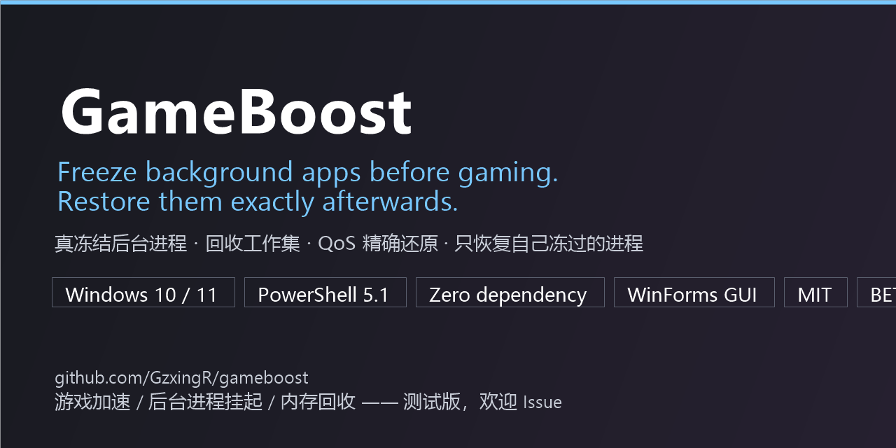
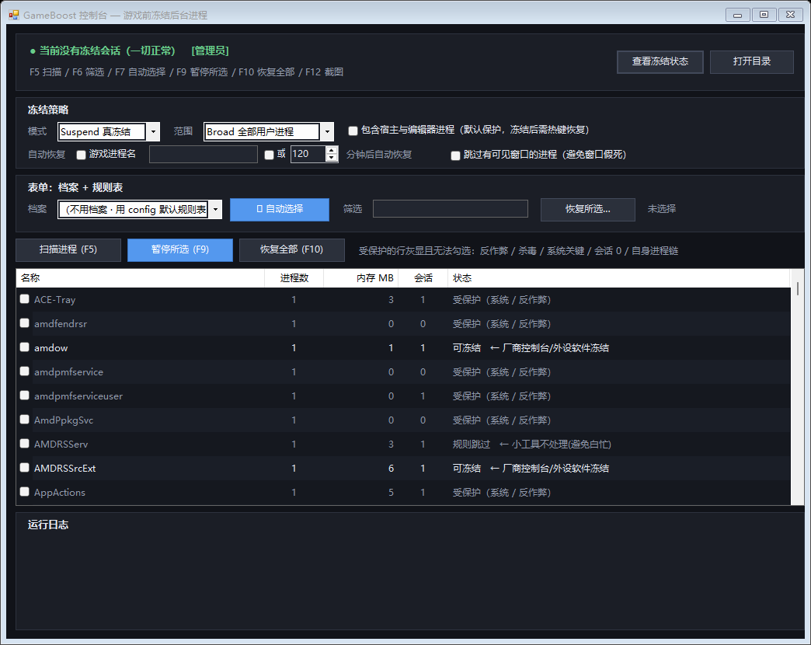

开游戏前冻结后台进程，玩完一键精确还原 —— Windows 10/11 开源、零依赖、纯 PowerShell + 图形界面。

在 GitHub 查看 / Download 反馈问题 / Report an issue-DryRun 试跑。发现"误冻结 / 漏冻结 / 恢复不完整"等情况，非常欢迎开 Issue。
浏览器、聊天工具、同步盘、厂商控制台会在你打游戏时继续占用 CPU 时间片、物理内存与磁盘 I/O。 GameBoost 用 Windows 原生机制把它们冻结（不是杀掉——标签页、会话、文档状态全部保留）， 同时回收它们占用的物理内存；结束后按精确快照还原优先级、内存优先级与能效（EcoQoS）状态。
与改注册表 / 停服务 / 清缓存的"游戏加速器"不同，本项目的操作完全可逆，且全程留日志。
NtSuspendProcess 挂起全部线程，CPU 占用归零EmptyWorkingSet 把被冻进程的工作集交给系统-Only），其余继续冻结，全部处理完才归档每次开游戏前手点几十个进程太累，于是把「该冻谁」做成了可复用的表单：档案（profile）是一套策略，
规则表（rules）是判定规则。规则按顺序匹配、首个命中生效，动作分三种：
真冻结（suspend）、只降 QoS（idle，不断消息、不丢自动保存）、不处理（skip）。
| 内置档案 | 策略 |
|---|---|
游戏前 | 冻结内存大户；微信/QQ/同步盘走软模式；Steam/Epic 等启动器排除在外 |
极简 | 只碰 500MB 以上的进程，其余不动 |
只降QoS | 零风险：全部走软模式，一个都不冻结 |
办公放宽 | 保留编辑器/IDE，其余走软模式 |
# 按档案冻结（先 DryRun 看一眼，什么都不改） .\pause-non-system-processes.ps1 -Profile '游戏前' -DryRun .\pause-non-system-processes.ps1 -Profile '游戏前' -Yes # 只恢复先不玩的那几个，其余继续冻着 .\resume-non-system-processes.ps1 -Only 'Weixin','chrome' -Yes
内存门槛按进程名聚合判定：同名字下所有进程的工作集求和后再比较， 所以浏览器/Electron 的一堆几 MB 小助手进程不会被逐个漏掉。规则表不能解除硬保护—— 反作弊、杀毒、系统关键进程、会话 0 服务永远不会进入自动选择；启动器在默认规则表里就是"不处理"。
git clone https://github.com/GzxingR/gameboost.git cd gameboost # 1) 先看它打算动谁（不改任何东西） .\pause-non-system-processes.ps1 -DryRun # 2) 冻结（默认 Safe 白名单） .\pause-non-system-processes.ps1 -Yes # 3) 玩完恢复 .\resume-non-system-processes.ps1 -Yes # 更省事的用法：内置档案 + 选择性恢复 .\pause-non-system-processes.ps1 -Profile '游戏前' -Yes .\resume-non-system-processes.ps1 -Only 'Weixin','chrome' -Yes
想用图形界面：双击 GameBoost.GUI.cmd，或运行 Install-GameBoostShortcuts.ps1 生成桌面快捷方式与热键
（Ctrl+Alt+G 控制台 / Ctrl+Alt+P 暂停 / Ctrl+Alt+R 恢复）。
| 层级 | 作用 |
|---|---|
| 关键进程判定 | IsProcessCritical 判定系统关键进程后跳过（不单靠它：该方法对 System、lsass 返回 False，故需与名单互补） |
| 名字黑名单（硬编码） | 系统组件 + 反作弊与杀毒（腾讯 ACE、EasyAntiCheat、BattlEye、Vanguard、Windows Defender 等），配置文件与命令行参数都无法解除。挂起反作弊会崩游戏甚至封号，挂起杀毒属于 EDR 明确监控的恶意行为特征 |
| 自身进程链 | 脚本的祖先与后代绝不冻结；终端家族与 explorer.exe 默认保护 |
| 前台全屏兜底 | 冻结瞬间拥有前台全屏窗口的进程强制排除 |
| 工具 | 定位 | 与本项目的关系 |
|---|---|---|
| Process Lasso（闭源） | 长期优先级/亲和性调节（ProBalance） | 不做冻结；可并存 |
| Mem Reduct / WinMemoryCleaner（开源） | 内存回收（工作集/待机列表） | 只回收不冻结；本项目冻结后才回收，效果更实在 |
| SceneShift（开源，TUI） | 终端界面的挂起/结束进程 | 同类思路；本项目侧重保护名单、指纹校验、QoS 快照与自动恢复 |
| 任务管理器「效率模式」（系统自带） | 对单个进程降 EcoQoS | 本项目可批量做，并额外冻结 + 回收内存 |

F12 可随时截图。"该冻谁"在这个项目里是数据（档案 + 规则表）而不是代码，机器接口也是稳定的，所以很适合让 AI 来扩展：
-EmitJson 与 config.json 的 JSON Schema（schema: 1 是稳定契约）agent-drive.ps1（只打印计划，加 -Execute 才动手）被挂起的窗口无法响应消息，Windows 会显示为无响应——这是冻结的固有现象，恢复即可。若介意，用 -Mode Idle（只降 QoS 不冻结）或 -SkipVisible（跳过有可见窗口的进程）。
默认不会：默认规则表把 Steam / Epic / Battle.net / EA Desktop / Ubisoft Connect / Riot / WeGame / GOG 判为 skip
（游戏通常要由它们拉起）。确实想冻，在列表里手动勾选即可——显式勾选优先于规则表。
不用：顶部选「档案」（内置 4 套策略）再点 🪄 自动选择（F7），按规则一键勾选后手动增减；
勾选会被记住（state\selection.json），下次扫描自动回勾。玩完还能用「恢复所选…」只恢复先不玩的那几个。
冻结会把脏页写回页文件，因此磁盘可用空间很小时不建议大批量冻结（实测 2 GB 脏页会让页文件使用量增加约 2 GB）。
不会：本项目不读写游戏内存、不注入、不改文件，只是挂起你自己指定的进程；且反作弊进程本身在硬保护名单里，永远不被挂起。
仅在 Windows 11 + PowerShell 5.1 上做过完整实测；其它组合理论上可用但未验证，欢迎反馈。
这是测试版，最缺真实反馈：开 Issue 告诉我们 「哪个该冻的没冻 / 哪个不该冻的冻了 / 恢复不完整」，比任何赞美都有价值。 详细实现依据、实测数据与开发中踩过的坑见 docs/TECHNICAL.md， 安全模型见 SECURITY.md。
为了打游戏时不被后台抢资源，我用 PowerShell 做了个"冻结"工具 —— 以及 7 个代价不小的坑
真实的设计取舍、实测数据（2067 MB 工作集归零、18 个目标冻结 1.60 秒），以及 7 个付了代价的坑：PowerShell 5.1 泛型相加异常、守护进程竞态、$pid 只读变量导致测试静默失败、规则内存门槛语义写反、-EmitJson 提前退出让 GUI 读到陈旧名单，以及一次误删整个项目后的字节级恢复过程。